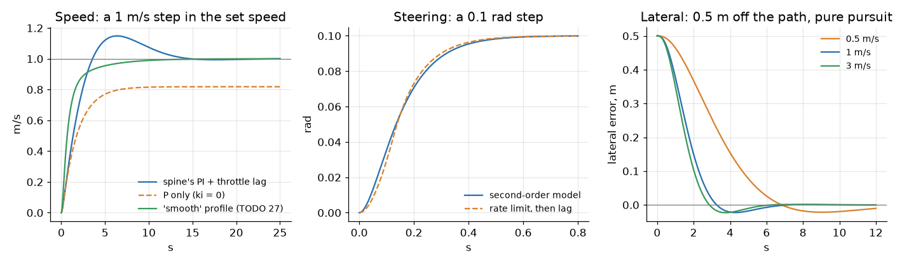
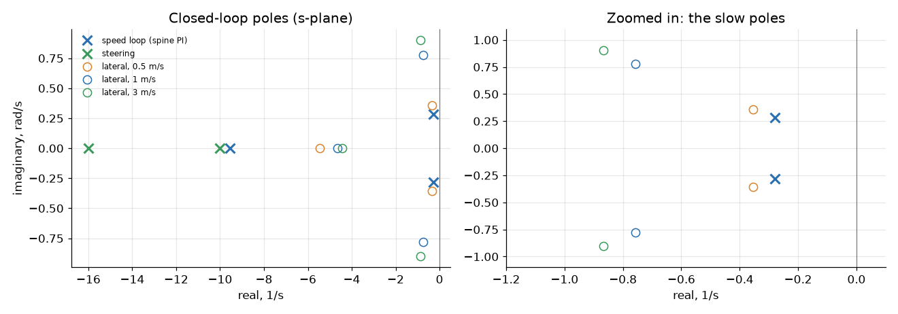
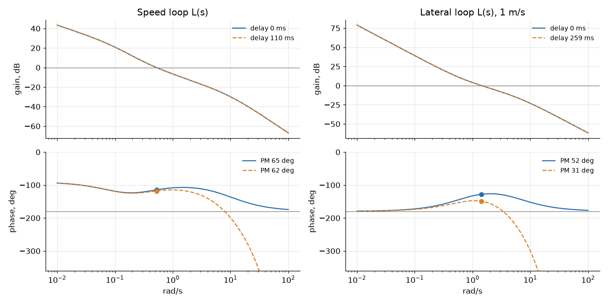
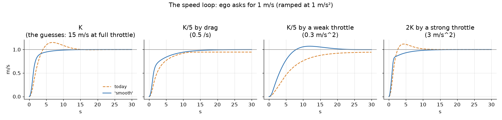

Ben, 24 Oct: "Do we have a mathematical model for the car now for the ego? ... a matrix control thing ... Maybe second order system". Now we do. This page writes the car the way SYSC 3600 (Systems and Simulation) would: differential equations, Laplace, transfer functions, state space, poles, step responses and Bode margins.
New to this, or rusty? Start with Learn: state space: the whole process, from a free-body diagram to a simulator, one step at a time.
The short version
- Three parts: speed (second order, with the spine's PI around it), steering (second order), and the path errors (state space, 3 states).
- Today's numbers are guesses from
vehicle.yaml. The car day's actuator tests measure each one;pixi run vehicle-model --set throttle_lag=0.25redoes it all. - The spine's speed loop is slow: it settles in about 13 s, and overshoots 15%. Delays don't matter to it (62° of phase margin even in the worst case).
- The
smoothprofile fixes the overshoot (TODO 27): a setpoint weight. 0% overshoot, settles in 8 s, and holds up when the throttle guess is 5x off. Not the default: it waits for the stands (Tuning the speed loop). - The lateral loop is where delays matter: 52° of phase margin with none, 45° with today's 84 ms, 31° with the worst case (259 ms) at 1 m/s.
- Gazebo's car steers 0.11 s slower than
vehicle.yamlsays (measured: an extra lag in Gazebo's own steering). Worth fixing before the sim-versus-real report. - Nothing here drives the car. It is for tuning, checking, and the report.
works the maths and its 35 tests: 30 cases in test_vehicle_model.py, 5 in
tools/tests/test_vehicle_model_tool.py (24 Oct, Ben's Mac; the speed loop's 25 Oct). needs you the car day's
numbers.
The picture
The whole chain, from the set speed and the path to the car:
SPEED (the spine, every 10 ms)
┌──────────┐ u ┌────────────┐ u_a ┌──────────────┐ v
v_set ──►(+)──e────►│ PI │────►│ throttle │────►│ the car │──┬──► speed
▲ - │ kp+ki/s │ │ 1/(τt s+1) │ │ K/(τv s+1) │ │
│ └──────────┘ └────────────┘ └──────────────┘ │
└──────────────────── wheel speed (a delay) ◄────────────────────┘
STEERING AND THE PATH (the controller, every 50 ms)
┌──────────┐ δcmd ┌─────────────────────┐ δ ┌────────────────┐
path ───►(-)───────►│ pure │─────►│ Jrk + linkage │───►│ bicycle │──┬─► e_y, e_θ
▲ │ pursuit K│ │ ωn²/(s²+2ζωn s+ωn²) │ │ θ'=vδ/L, y'=vθ │ │
│ └──────────┘ └─────────────────────┘ └────────────────┘ │
└──── camera, detections, the controller's cycle: e^(-sT) ◄────────────────┘The symbols
| Symbol | Means | Today | From |
|---|---|---|---|
| v | speed along the car | m/s | |
| u | throttle command, 0 to 1 | the spine | |
| u_a | the throttle actually applied | ||
| a_max | acceleration at full throttle | 1.5 m/s² | max_accel GUESS |
| d | drag: speed lost per second per m/s | 0.1 /s | drag GUESS |
| K = a_max / d | speed that full throttle would hold | 15 m/s | |
| τv = 1 / d | the car's own time constant | 10 s | |
| τt | the throttle's lag | 0.1 s | throttle_lag GUESS |
| kp, ki | the spine's PI gains | 0.3, 0.1 | speed_loop.rs |
| r | the steering motor's top speed | 0.8 rad/s | steer_rate GUESS |
| τm | the motor, as a lag (below) | 0.0625 s | |
| τl | the linkage's lag | 0.1 s | steer_lag GUESS |
| ωn, ζ | the steering's natural frequency, damping | 12.6 rad/s, 1.03 | |
| δ | the wheel angle (centre wheel), + left | rad | |
| L | wheelbase | 1.57 m | wheelbase TODO measure |
| e_y, e_θ | sideways and heading error from the path | m, rad | |
| ld | pure pursuit's lookahead | 1.5 to 4 m | nav2.yaml |
| T | a delay | s |
1. Speed
The differential equations
The throttle reaches its level with a first-order lag:
τt · du_a/dt + u_a = uThe car speeds up in proportion to the throttle, and drag slows it in proportion to its speed:
dv/dt = a_max · u_a − d · vDivide by d. It's the textbook first-order form:
τv · dv/dt + v = K · u_a τv = 1/d = 10 s, K = a_max/d = 15 m/sLaplace and transfer functions
V(s) / U_a(s) = K / (τv s + 1) the car
U_a(s) / U(s) = 1 / (τt s + 1) the throttle
P(s) = K / ((τv s + 1)(τt s + 1)) throttle command to speedPoles: s = −1/τv = −0.1 (the car: slow) and s = −1/τt = −10 (the throttle: fast). Alone, the car reaches 63 % of its final speed after τv = 10 s.
State space
x = [v, u_a]
x' = A x + B u A = [ −d a_max ] B = [ 0 ]
[ 0 −1/τt ] [ 1/τt ]
y = C x C = [ 1 0 ]The spine's speed loop around it
firmware/spine/crates/spine-core/src/speed_loop.rs, while it uses the throttle:
e = v_set − v
throttle = kp·e + ki·∫e dt C(s) = kp + ki/s = (kp s + ki)/sThe closed loop, T(s) = C P / (1 + C P). Leave out the fast throttle lag first: the characteristic equation is
s² + (d + a_max·kp) s + a_max·ki = 0
s² + 0.55 s + 0.15 = 0
s = −0.275 ± 0.273j ωn = 0.39 rad/s, ζ = 0.71| Loop | Poles (1/s) | Rise (10-90 %) | Overshoot | Settles (2 %) |
|---|---|---|---|---|
| the car alone | −0.1 | 22 s | 0 | 39 s |
| spine PI, no throttle lag | −0.275 ± 0.273j | 2.7 s | 14 % | 12.9 s |
| spine PI + throttle lag | −0.28 ± 0.28j, −9.5 | 2.6 s | 15 % | 12.7 s |
the smooth profile + throttle lag |
−0.28, −1.61, −8.2 | 2.5 s | 0 | 7.9 s |

What the poles mean for the car:
- The pair at −0.28 ± 0.28j: the car reaches a new speed in about 3 s, overshoots by 15 %, and settles in 13 s. Slow, but smooth.
- The overshoot is more than ζ = 0.71 alone gives (about 4 %): the PI adds a zero at −ki/kp = −0.33, near the poles. The ramped set speed doesn't hide it: Gazebo's car reversed at 0.57 m/s for ego's 0.5 (TODO 27). The fix: Tuning the speed loop.
- The pole at −9.5 is the throttle: 30 times faster, so it hardly matters.
Steady state: the final value theorem
| Case | Final value theorem | Result |
|---|---|---|
| a step, with the spine's PI | e = 1 / (1 + L(0)), and L(0) = ∞ (the integrator) | 0: no error left |
| a step, P only (ki = 0) | e = 1 / (1 + kp·K) = 1 / (1 + 0.3 × 15) | 18 % short |
| a ramp of 1.5 m/s² (the spine's slew) | e = r / Kv, Kv = lim s·L(s) = ki·K = 1.5 /s | 1.0 m/s behind while it ramps |
| a ramp of 1.0 m/s² (ego's limit) | the same | 0.67 m/s behind |
| today's open loop (no wheel speed) | v = K · (target / 3.0) | 5 × the target |
Two guesses disagree
Today's ESP32 has no wheel speed, so it runs the speed open loop: throttle =
target / 3.0 m/s (FULL_THROTTLE_SPEED). The model's guesses say full throttle
holds K = a_max / d = 15 m/s. Both can't be right: either the drag is about 0.5 /s,
or full throttle gives more than 3 m/s. Tests 4.2 (coast) and 4.4
(throttle-map) settle it. Until then, keep ego's 1 m/s cap.
What the linear model leaves out
| Nonlinearity | In the spine | Effect |
|---|---|---|
| throttle 0 to 1 | clamp01 |
big errors saturate: the car speeds up at a_max at most |
| the integral 0 to 0.3 | integral_limit |
anti-windup; holds up to 0.3 × K = 4.5 m/s on the flat. But if K is really 3 (a 5x weaker throttle), only about 1.4 m/s: 2 m/s needs 0.67 of throttle |
| the brake | a P loop beyond the 0.2 m/s coast band | slowing down is a different, P-only loop: B(s) = −b_max / ((s + d)(τb s + 1)) |
| the set speed's ramp | 1.5 m/s² | steps become ramps (the table above) |
| the throttle's deadband | throttle_deadband |
0 today; a real one adds a dead zone at low speed |
2. Steering
The Jrk G2 turns the steering motor toward its target at up to r = 0.8 rad/s (a rate limit: nonlinear). The linkage follows with a lag τl = 0.1 s.
Linearising the rate limit. For a step of size A, the rate limit takes A/r, and its average delay is A/(2r). A first-order lag with that delay has
τm = A / (2r) = 0.1 / (2 × 0.8) = 0.0625 s (for A = 0.1 rad, a lane-keeping step)Two lags in a row make a second-order system:
G_s(s) = 1 / ((τm s + 1)(τl s + 1))
= ωn² / (s² + 2ζωn s + ωn²)
ωn = 1 / √(τm·τl) = 12.6 rad/s
ζ = (τm + τl) / (2·√(τm·τl)) = 1.03| ωn | ζ | Rise | Overshoot | Settles |
|---|---|---|---|---|
| 12.6 rad/s | 1.03 (just overdamped) | 0.28 s | 0 | 0.49 s |
What it means: the steering is about 10 times faster than the path loop (ωn 12.6 vs about 1 rad/s), so the path loop sees it as a small delay, τs = 2ζ/ωn = 0.16 s.
What's a guess: all of it. Two real lags can never overshoot (ζ ≥ 1). If the Jrk's own
position loop overshoots on the car, read the overshoot off test 3.11's step, and
--set steer_overshoot=0.1 sets ζ from the textbook formula:
overshoot = exp(−ζπ / √(1 − ζ²)) ζ = −ln(OS) / √(π² + ln²(OS))Left out: the rate limit itself (big steps take A/r: full lock from centre takes 0.6 s), the deadband (0.005 rad), and the software's own rate limits before it (ego and the spine: 0.6 rad/s, slower than the motor).
3. The path: lateral state space
The kinematic bicycle
The same model as ego and MPPI, about the rear axle (base_link), the path along x:
x' = v · cos θ
y' = v · sin θ
θ' = v · tan δ / LLinearised about driving straight
Small angles: sin θ ≈ θ, tan δ ≈ δ. With the steering as one lag τs:
e_y' = v · e_θ
e_θ' = (v / L) · δ
δ' = (δcmd − δ) / τsx = [e_y, e_θ, δ], u = δcmd
[ 0 v 0 ] [ 0 ]
A = [ 0 0 v/L ] B = [ 0 ]
[ 0 0 −1/τs ] [ 1/τs ]At 1 m/s, today: A = [[0, 1, 0], [0, 0, 0.637], [0, 0, −6.15]], B = [0, 0, 6.15]ᵀ.
lateral(v, steering_order=2) gives the 4-state version with the second-order
steering (δ' as a state).
Eigenvalues: 0, 0 and −1/τs = −6.15, at every speed. The two at 0 are a double integrator: steer, and the heading changes; the heading, and the car drifts sideways. Left alone, nothing pulls the car back. Speed changes B's reach (v and v/L), not the eigenvalues; in reverse, v < 0 flips the signs.
The test checks A against a finite-difference Jacobian of the nonlinear bicycle.
Closing the loop: pure pursuit
These margins are for Regulated Pure Pursuit (controller:=rpp). MPPI, the default since
22 Oct (Path followers), isn't modelled here.
Regulated Pure Pursuit steers for the curvature 2 sin α / ld toward a point ld ahead on the path. For small errors:
δcmd = −(2L / ld²) · e_y − (2L / ld) · e_θ u = −K xWith no steering lag, the closed loop is
s² + (2v / ld) s + 2v² / ld² = 0 ωn = √2 · v / ld, ζ = 0.707 at every speedRPP's lookahead grows with speed (ld = 1.5 s × v, from 1.5 to 4 m), so v / ld stays the same from 1 to 2.7 m/s: the car corrects in the same time at any of those speeds.
| v (m/s) | ld (m) | Closed-loop poles (with the steering) | ωn, ζ |
|---|---|---|---|
| 0.5 | 1.5 | −0.35 ± 0.36j, −5.5 | 0.50, 0.71 |
| 1 | 1.5 | −0.76 ± 0.78j, −4.6 | 1.09, 0.70 |
| 2 | 3.0 | −0.76 ± 0.78j, −4.6 | 1.09, 0.70 |
| 3 | 4.0 | −0.87 ± 0.90j, −4.4 | 1.25, 0.69 |

4. The delays
| Delay | Value | Where it comes from |
|---|---|---|
| camera to detections | 26 ms median, 42 worst | Camera pipeline, on a Mac |
| the camera's frame | 67 ms (15 fps): half on average | the picture's age when taken |
| the controller's cycle | 50 ms (20 Hz): half on average | nav2.yaml controller_frequency |
| the heartbeat | up to 100 ms | the most a command may lag before the ESP32 brakes (the heartbeat, TODO 50) |
| the spine's tick | 10 ms | esp32-umod TICK |
| the wheel speed's age | 50 ms GUESS | the time between Hall pulses at low speed |
| Case | Lateral loop | Speed loop |
|---|---|---|
| none | 0 | 0 |
| typical | 26 + 33 + 25 = 84 ms | 5 + 25 = 30 ms |
| worst | 42 + 67 + 50 + 100 = 259 ms | 10 + 100 = 110 ms |
The lateral delays are lane keeping's, by camera. Nav2 following a path from the EKF has no camera in the loop (its own delay is the EKF's), so its margins sit between "none" and "typical". The heartbeat isn't a delay in normal driving: it is the most a command may lag before the brakes take over, so the worst case counts all of it.
Padé. A delay e^(−sT) isn't a ratio of polynomials. Padé replaces it with one, so poles still make sense:
e^(−sT) ≈ (1 − sT/2 + (sT)²/12) / (1 + sT/2 + (sT)²/12) (second order)The margins below use the exact delay (it only subtracts ωT from the phase); pade()
is there for pole maps and for simulation.
The margins (Bode)

Speed loop (the spine's PI + the throttle's lag):
| Delay | Phase margin | Gain margin | Crossover | Bandwidth |
|---|---|---|---|---|
| none | 65° | ∞ | 0.52 rad/s | 0.70 rad/s |
| typical, 30 ms | 64° | 38 dB | 0.52 rad/s | 0.71 rad/s |
| worst, 110 ms | 62° | 27 dB | 0.52 rad/s | 0.74 rad/s |
Its crossover is so low (0.52 rad/s) that 0.11 s costs only 3°.
Lateral loop (pure pursuit + the steering), phase margin / gain margin:
| v (m/s) | None | Typical, 84 ms | Worst, 259 ms | Extra delay it could still take |
|---|---|---|---|---|
| 0.5 | 59° / ∞ | 55° / 25 dB | 48° / 16 dB | 1.3 s |
| 1 | 52° / ∞ | 45° / 19 dB | 31° / 9 dB | 0.55 s |
| 2 | 52° / ∞ | 45° / 19 dB | 31° / 9 dB | 0.55 s |
| 3 | 50° / ∞ | 43° / 17 dB | 27° / 8 dB | 0.46 s |
What it means: every delay costs phase = crossover × delay. At 1 m/s the crossover is 1.4 rad/s, so 84 ms costs 7° and the worst case 21°. 30° is the usual lower limit: the worst case at 3 m/s (27°) is below it: the car would swing past the path before settling. At ego's 1 m/s cap today, there's room.
5. Discrete time: as the computers run it
The spine runs every 10 ms; the controllers every 50 ms. scipy.signal.cont2discrete
with a zero-order hold (the command is held until the next one) gives
x[k+1] = Φ x[k] + Γ u[k] Φ = e^(AT), Γ = ∫₀ᵀ e^(Aτ) dτ · B| Loop | Period | Largest |z| | e^(sT) of the continuous poles |
|---|---|---|---|
| speed (the spine's own update: integral first, then kp·e + I) | 10 ms | 0.99720 | 0.99720 |
| lateral at 1 m/s, the command one cycle late | 50 ms | 0.960 | 0.963 |
| lateral at 3 m/s, the command one cycle late | 50 ms | 0.954 | 0.958 |
All inside the unit circle: stable. At 10 ms the spine is effectively continuous. The tests check the discrete model against the continuous one at every sample, and the discrete speed loop against the spine's own code, line by line.
6. Gazebo's car against the model
Gazebo's car runs our actuator model (aav_gazebo actuator_model.py, the same
numbers), then Gazebo's own Ackermann plugin:
| Speed | Steering | |
|---|---|---|
| the actuator model | vehicle.yaml's lags, a_max, drag |
rate limit, then steer_lag |
| Gazebo's plugin, after it | max_acceleration ±10 m/s²: no extra lag to speak of |
each joint turns at steer_p_gain × error: one more lag, 1/10 = 0.1 s |
| the actuator tests in Gazebo (15 Oct) | give back 1.496 m/s², 0.100 s, 0.100 /s | give back 0.817 rad/s, 0.105 s: they read the model's angle, not Gazebo's wheels |
Measured in Gazebo (24 Oct, Ben's Mac, headless, its own domain): actuator-test
steer-rate --sim drove the steps (centre → full lock → centre, each way), and a
recorder logged Gazebo's steering joints (/joint_states, made into the centre angle)
beside the model's angle (/vehicle/steering), 57 s:
| Fit: Gazebo's wheels from the model's angle | Result |
|---|---|
| no lag | 16.2 mrad rms off |
| a first-order lag | 0.110 s, 0.5 mrad rms off |
| a pure delay instead | 0.110 s, 2.2 mrad rms off |
0.110 s = 1/steer_p_gain (0.1 s) + about 10 ms from the adapter's 50 Hz hold. So
Gazebo's wheels steer 0.11 s later than vehicle.yaml says. Its lateral phase margin:
| v (m/s) | The model (typical delays) | Gazebo (+0.1 s) |
|---|---|---|
| 1 | 45° | 37° |
| 3 | 43° | 34° |
Gazebo is a little harsher than the car the guesses describe: anything that works there
has margin to spare. To make them match (not done: it changes the simulator): raise
steer_p_gain to 50 (a 20 ms lag), or take 0.1 s off the steering lag the adapter uses.
Then measure Gazebo's wheel angle (its joint states) against the model's, for the
sim-versus-real report (T2.7). Speed: the 15 Oct runs match (0 to 3 m/s in 6.2 s), except
that Gazebo's car starts rolling about 0.3 s late.
7. Which numbers are guesses
| Number | Today | Measured by | Changes |
|---|---|---|---|
max_accel |
1.5 m/s² | 4.1 speed-up, 4.4 throttle-map |
K, the loop's speed |
drag |
0.1 /s | 4.2 coast |
K and τv: the slow pole |
throttle_lag |
0.1 s | 4.1 speed-up |
the fast speed pole |
max_brake, brake_lag |
3.0 m/s², 0.2 s | 4.3 brake |
the brake loop |
steer_rate |
0.8 rad/s | 3.11 steer-rate |
τm, ωn |
steer_lag |
0.1 s | 3.11 steer-rate (and 4.5 circles) |
τl, ωn, ζ |
| ζ of the steering | from the two lags | 3.11's step, if it overshoots | steer_overshoot |
wheelbase |
1.57 m | the tape measure (M-list) | v/L in A |
| the wheel speed's age | 50 ms | the Arduino's pulse rate (H-list) | the speed loop's delay |
| delays on the Orin | the Mac's 26 ms | car day 4d, 5 | the lateral margins |
At the car, the actuator tests print the numbers; then:
pixi run vehicle-model --set throttle_lag=0.25 --set drag=0.3 --set steer_lag=0.15In code, model.with_measured(report.yaml) takes the actuator tests' report as it is.
What it's for
Tuning the speed loop
TODO 27: today's loop overshoots about 15%. Gazebo's car reversed at 0.57 m/s for ego's 0.5; 1.0 gave 1.15, and 2.0 gave 2.20. The ground rules (25 Oct):
- The firmware's defaults don't change. The throttle's strength is a guess that two sources disagree on by 5x (TODO 52b): full throttle holds 15 m/s by the drag guess, 3 m/s by the ESP32's open loop. The real gains come from the stands, after the throttle tests.
- So the fix is a profile, ready to switch on, that works across that 5x.
Why it overshoots: the PI's zero
Not windup. The throttle is never pinned on the way to 0.5 m/s (it peaks at 0.15), so clamping changes nothing (the table below). The cause is the PI's zero:
T(s) = P (kp s + ki) / (s (1 + C P)) zero at −ki/kp = −0.33, slow poles −0.28 ± 0.28jThe fix is a setpoint weight b: the P term sees only b × the set speed.
throttle = kp·(b·r − v) + ki·∫(r − v) dt
T(s) = P (b kp s + ki) / (s (1 + C P)) zero at −ki/(b kp); the poles don't moveThe poles, the margins and how the car rejects a hill don't depend on b. Only the response to a new set speed does.
The candidates, on the model
pixi run vehicle-model --speed-loop runs each one: the spine's own update (Gazebo's port,
checked against the Rust), ego's 1 m/s² ramp, the wheel speed's delay, and the actuators.
Each cell is the worst of 6 runs (0.5, 1 and 2 m/s; lag 0.1 s with 30 ms of delay, and lag
0.2 s with 110 ms).
| Design | Overshoot at K | Settles (5%) at K | K/5 by a weak throttle | Phase margin, worst |
|---|---|---|---|---|
| today (kp 0.3, ki 0.1) | 17 % | 13.7 s | 17 %, 29 % short of 2 m/s | 54° |
| today + clamping | 17 % | 13.7 s | the same | 54° |
| today + setpoint weight 0 | 5 % | 8.5 s | 14 %, settles in 57 s | 54° |
| today + feed-forward (1/a_max) | 5 % | 8.3 s | 12 %; 88 % at 2K | 54° |
| pole placement (kp 1.13, ki 0.67) | 30 % | 5.8 s | 11 %, 13 % short | 31° |
| pole placement + weight 0.3 | 0 % | 4.3 s | 22 % | 31° |
smooth: kp 1.0, ki 0.25, weight 0.75 |
0 % | 5.7 s | 8 %, reaches 2 m/s | 42° |
Why not the others:
- Clamping alone does nothing: there's no windup to stop.
- A feed-forward from the throttle map is only as good as the map: with a stronger throttle than guessed it overshoots 88%.
- Pole placement is fast, but its ζ = 0.9 falls to 0.4 with a 5x weaker throttle (22% overshoot), and its kp 1.13 with ki 0.67 leaves 31° with a 2x stronger one.
The design: smooth
| Part | Value | Why |
|---|---|---|
| kp, ki | 1.0, 0.25 | real poles, −0.28 and −1.32 /s (ζ 1.3): nothing to ring |
| setpoint weight b | 0.75 | the zero moves to −ki/(b kp) = −0.33, just past the slow pole: no overshoot |
| integral limit | 1.0 (plus (1 − b)·kp·r) | a weak throttle needs up to full throttle from the integral; today's 0.3 stops 29% short |
| anti-windup | clamping | no integrating while the throttle is pinned: the bigger limit can't wind up (held back for 20 s, then let go: no surge) |

Across the uncertainty
The same runs, smooth against today:
| Plant | Today: overshoot / settles / end | smooth: overshoot / settles / end |
smooth: phase margin, worst |
|---|---|---|---|
| K: the guesses (a_max 1.5, drag 0.1) | 17 % / 13.7 s / reached | 0 % / 5.7 s / reached | 59° |
| K/5 by drag (0.5 /s) | 0 % / never / 29 % short | 0 % / 11.1 s / reached | 75° |
| K/5 by a weak throttle (0.3 m/s²) | 17 % / never / 29 % short | 8 % / 15.3 s / reached | 64° |
| 2K by a strong throttle (3 m/s²) | 15 % / 9.2 s / reached | 1 % / 6.9 s / reached | 42° |
- The throttle's lag doubled is in every cell (the worst case is shown).
- The weak throttle still overshoots 8%: its ζ falls to 0.73. That throttle can't follow ego's 1 m/s² ramp anyway; test 4.1 would show it, and the gains would be redone.
- The price: kp 1.0 makes the throttle 3x more sensitive to a noisy wheel speed. Watch
/vehicle/throttlefor jitter on the stands.
In Gazebo (25 Oct)
pixi run sim-check --speed-steps-only --speed-loop <profile>: Gazebo's empty world,
headless, a scripted drive ramped at 1 m/s² and held 20 s at each speed; Gazebo's truth.
Three runs of each profile on Ben's Mac, beside two other helpers' simulators:
| Step | Today: peak (overshoot) | Today: within 5 % after | smooth: peak (overshoot) |
smooth: within 5 % after |
|---|---|---|---|---|
| reverse 0.5 m/s | 0.579 (15.9 %) | 10.9 s | 0.500 (0 %) | 4.2 s |
| forward 1.0 m/s | 1.152 (15.2 %) | 11.0 s | 0.999 (0 %) | 4.7 s |
| forward 2.0 m/s | 2.202 (10.1 %) | 13.3 s | 1.999 (0 %) | 5.3 s |
- Runs 2 and 3 of today's gains gave the same numbers; so did all three of
smooth. Run 1 of today's was spoiled by the Mac's load (late commands made gazebo_adapter brake: sim-check reports that, and drives the step again, up to 3 times). - At 2 m/s today's loop passes the coast band (2.2), brakes, and the brake resets the
integral: the car then sags to 1.76 m/s and takes 10 s to come back.
smoothnever gets there. - "After" counts from the moment the car moves: ego, twist_mux and the adapter add about a second before that.
- The spine in the loop (
spine:=true: spine_sim runs spine-core's Rust), one run each: today's peaks 0.579, 1.151 and 2.194, the same as the actuator model's port;smooth0.500, 0.999 and 1.999. pixi run sim-check --speed-loop smooth, the road world with Nav2: all 10 checks pass.
What stays, and how to switch
| Where | Default (unchanged) | To try smooth |
|---|---|---|
spine-core (SpeedLoopConfig) |
default(): kp 0.3, ki 0.1, b 1, bounds only |
SpeedLoopConfig::smooth(), or SpeedLoopProfile::Smooth.config(), in the board's SpineConfig |
| Gazebo's actuator model | speed_loop:=default |
pixi run sim speed_loop:=smooth |
| the spine in Gazebo, the bench | speed_loop:=default (spine_sim) |
... spine:=true speed_loop:=smooth, pixi run bench speed_loop:=smooth |
| sim-check | today's | pixi run sim-check --speed-steps --speed-loop smooth |
Both copies of the loop, the Rust and Gazebo's Python, check the same examples
(firmware/spine/speed_loop_vectors.txt, both profiles). Where to try it on the car:
Actuator tests.
Pole placement, after the car day
Match the closed loop (no throttle lag) to the poles you want:
s² + (d + a_max·kp) s + a_max·ki = s² + 2ζωn s + ωn²
kp = (2ζωn − d) / a_max
ki = ωn² / a_maxWith the measured a_max and drag (TODO 52b), place the poles real (ζ ≥ 1), then set b so
the zero −ki/(b kp) sits just past the slow pole. smooth is that recipe, done on today's
guesses: it is a starting point for the stands, not the answer.
Checking the delays
The margins table is the check: before raising ego's speed cap, make sure the lateral loop keeps 30° or more with the Orin's measured delays.
Making Gazebo's car match the real one
Fit the car day's numbers, put them in vehicle.yaml, fix Gazebo's extra steering lag
(section 6), then compare the same step in both: that's the sim-versus-real report.
After state space
| Next | What | Why it fits here |
|---|---|---|
| LQR for lane keeping | choose Q and R; scipy.linalg.solve_continuous_are gives K for u = −Kx |
the same A and B: a better K than pure pursuit's, with a guaranteed 60° phase margin (before delays) |
| The EKF | robot_localization is a Kalman filter on a state-space model | x' = f(x, u) and its Jacobian: the same linearising as section 3 |
| Gain scheduling | K(v) | A changes with v; RPP's lookahead already does this |
Run it
pixi run vehicle-model # the tables, and the three figures
pixi run vehicle-model --no-figures # the tables only
pixi run vehicle-model --speed-loop # TODO 27: the speed loop's designs, the uncertainty| File | What |
|---|---|
ros/ego/aav_ego/aav_ego/vehicle_model.py |
the maths: no ROS, numpy and scipy only |
ros/ego/aav_ego/test/test_vehicle_model.py |
30 test cases (25 functions, 2 of them parametrized): textbook cases, the Jacobian, the final value theorem, discrete vs continuous, the gains against the Rust, the setpoint weight |
tools/vehicle_model.py |
the tables and docs/img/vehicle-model-*.png |